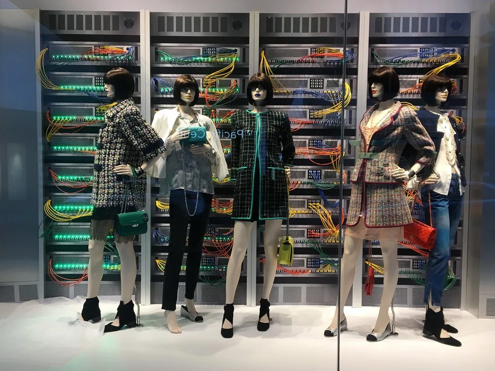
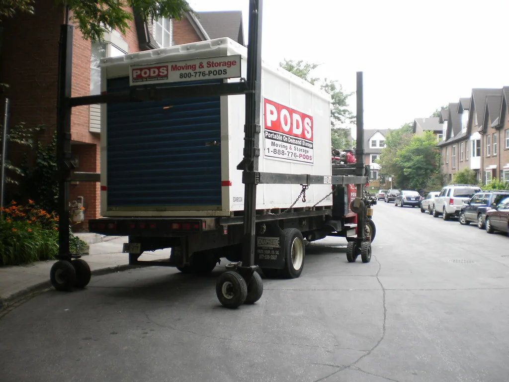
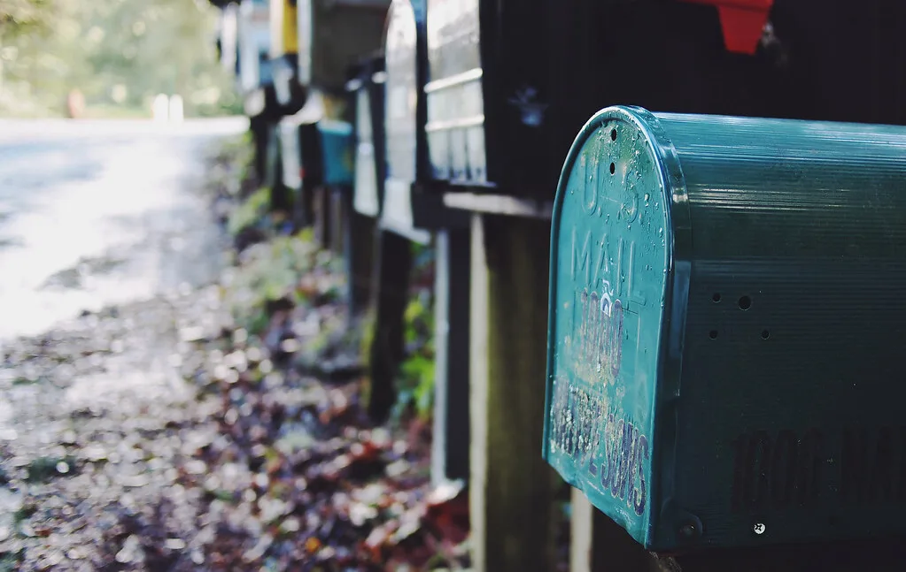
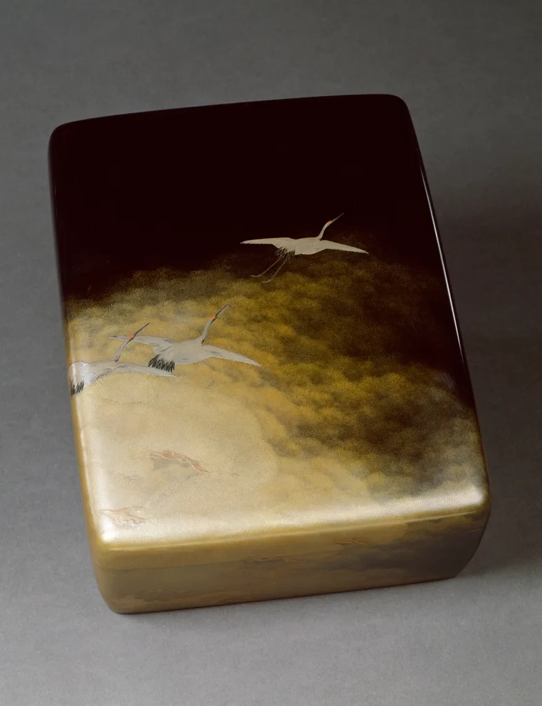

백엔드와 앱을 배우는 신입입니다. 화면보다 그 뒤에서 도는 것에 관심이 많아, 만든 것마다 장애를 일부러 내 보고 복구시켜 봤습니다.
만든 것 보기학원에서 배운 순서가 아니라, 실제로 손에 익은 순서로 적었습니다.

동네 중고 거래 API Node.js · Express · PostgreSQL 거래글 CRUD와 검색을 직접 설계해 본 첫 서버입니다. ↗ 링크 출석 체크 안드로이드 앱 Kotlin · Room · Retrofit 스터디 모임에서 쓰려고 만든 앱입니다. ↗ 링크
배포 자동화 GitHub Actions · Docker 손으로 올리다 세 번 틀린 뒤 만들었습니다. ↗ 링크
알림 발송 큐 Node.js · Redis 알림이 몰릴 때 순서가 꼬여서 큐를 붙였습니다. ↗ 링크
API 문서 자동화 OpenAPI · Swagger UI 프론트를 맡은 팀원이 매번 물어봐서 만들었습니다. ↗ 링크장애는 대부분 새벽에 납니다. 그래서 일부러 새벽 시간에 서버를 내려 보고 복구해 봤습니다.
알림이 울리고 로그를 열었을 때 무엇을 먼저 봐야 하는지, 어떤 로그를 미리 남겨 뒀어야 했는지를 그때 알았습니다.
지금은 무엇을 만들든 로그부터 설계합니다. 잘 만든 기능보다 잘 남긴 기록이 저를 더 많이 구했습니다.
풀을 20으로 두고 동시 요청 200을 때려 봤습니다. 대기가 쌓이다 타임아웃 나는 걸 처음 눈으로 봤습니다.
인덱스를 걸었는데 오히려 느려진 쿼리가 있었습니다. 실행 계획을 읽을 줄 알아야 한다는 걸 배웠습니다.
도커 이미지가 1.2GB였습니다. 멀티스테이지 빌드로 180MB까지 줄였습니다.
사용자 이메일을 그대로 찍고 있었습니다. 전부 마스킹 처리했습니다.
재시도를 무한으로 걸면 장애가 커진다는 걸 알았습니다. 상한과 백오프를 넣었습니다.
하루가 밀렸습니다. 이후로 서버는 전부 UTC로 두고 표시할 때만 바꿉니다.
백엔드 또는 안드로이드 신입 자리를 찾고 있습니다. 인턴·계약직도 좋습니다.
제 코드에서 이상한 부분이 보이면 그것만 알려 주셔도 정말 감사합니다.